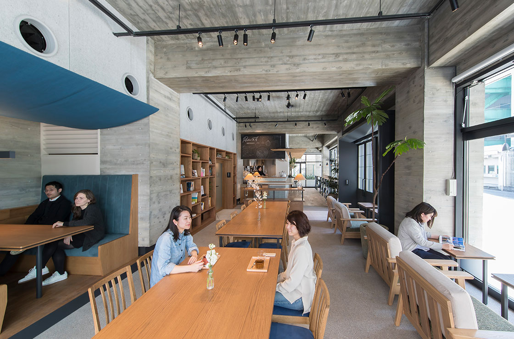
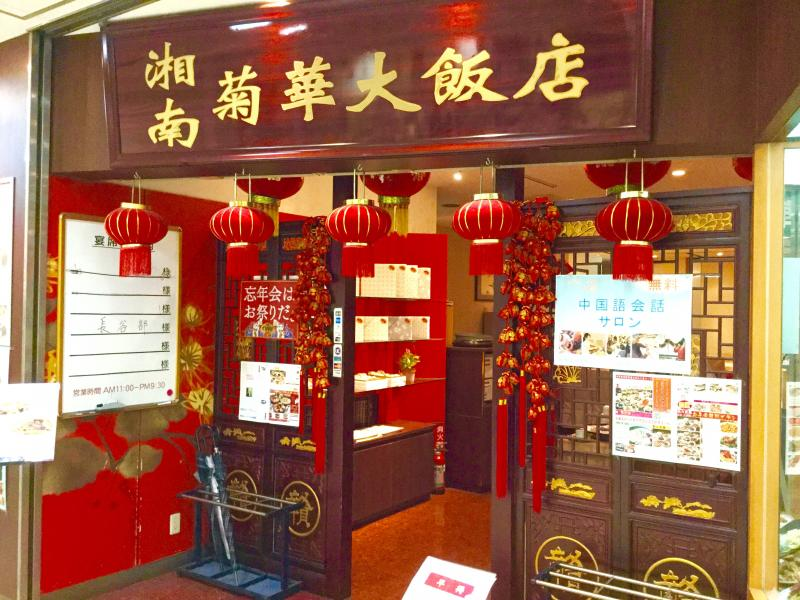
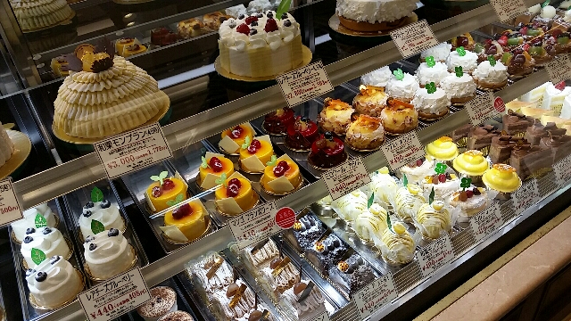

湘南台駅紹介Webページ開発プロジェクト

場所：神奈川県藤沢市湘南台1-3-1
湘南菊華大飯店は、平成９年１１月湘南台ウエストプラザ１番竣工と同時にオープンしました。本格上海料理が楽しめる「湘南菊華大飯店」で、心も体も満たされるひと時をお過ごしください。

場所：神奈川県藤沢市湘南台2-5-11 ウエストプラザ2F
「和牛の美味しさを伝えたい・・・」この想いを叶える為にオープンさせた食彩和牛しげ吉。外国産牛肉が安く出回る中、和牛＝高価・贅沢というイメージがあると考えます。「食」を「彩」る「和牛」のお店。しげ吉は、お客様の「笑顔」を見るために日々努力・日々向上を目指します。
